ダラットの夜は更けていく。
…となると、お待ちかねのバータイムである。
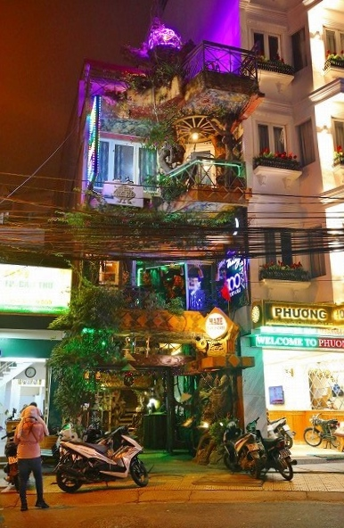
どこか面白そうな店はないかいな、とウロウロしているとなにやら
妙な感じのバーがあるではないか。
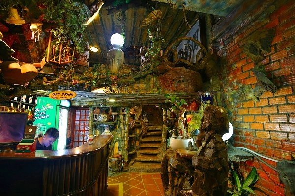
中に入ってみると何やら怪しげな雰囲気。
いいぞ、いいぞ。
入口のカウンターでビールを買い、中に入ってみる。
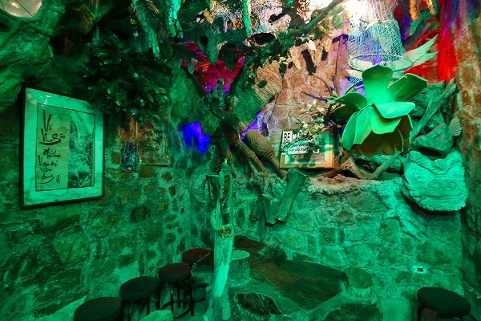
んん？
何だここは。
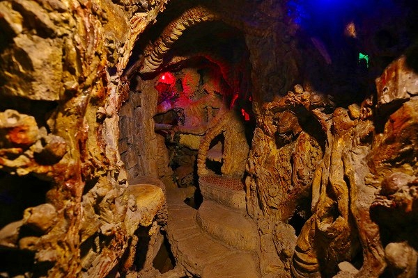
階段を降りるとそこは
岩窟を模した迷路のよう。
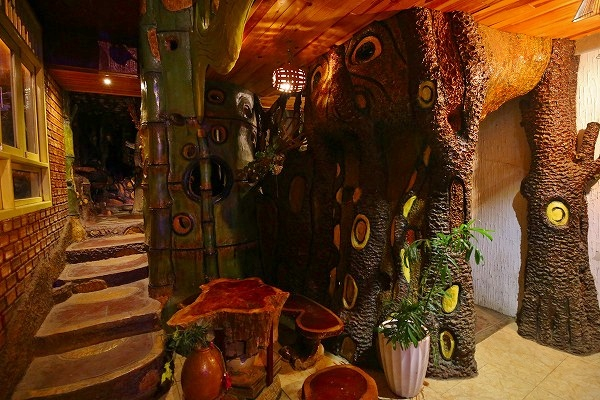
所々に椅子とテーブルはあるものの、魅惑的な脇道や階段が先へ先へといざなっている。
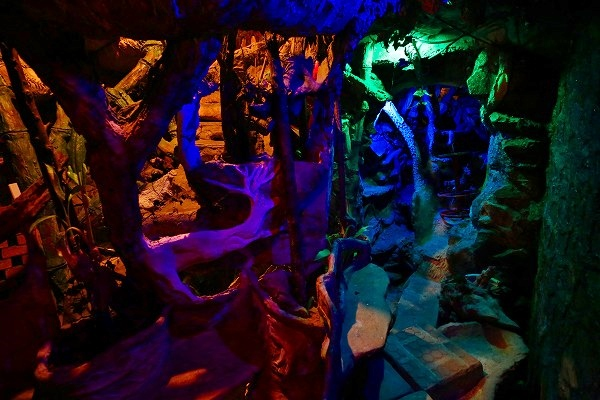
道は分岐し、しかも狭くて暗い。
場所によっては屈まないと進めない箇所も。
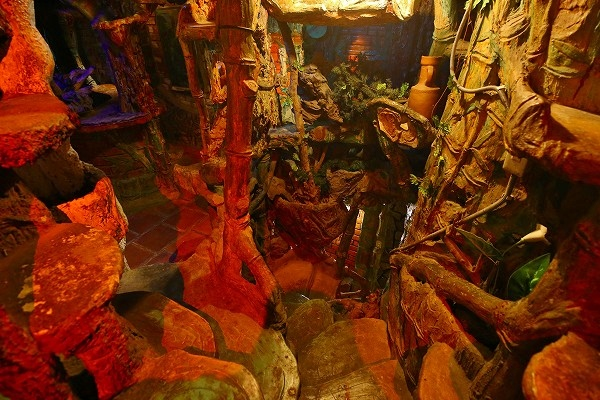
行けるかな、と思ったら行き止まりだったり、行き止まりかなと思ったら抜け道が現れたり…
迷路みたいじゃなくて、迷路そのものじゃないかっ！
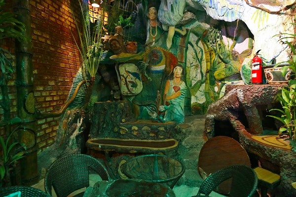
散々迷った挙句、やや広いスペースに出たので腰を落ち着けることにした。
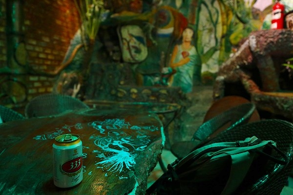
ビール開けないで良かった。開けてたら大惨事になっていたと思う。
カクテルとか注文した人とかどうやってここまで来るのだろう？
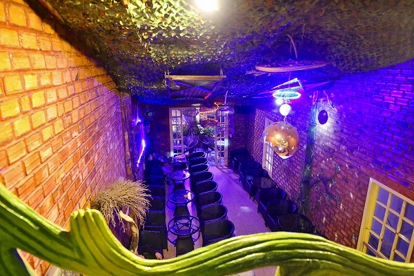
下を見るとこの店のメインフロアなのだろう、広いフロアが広がっていた。
ビールを呑んだものの、お替りするにはまた最初の入口のカウンターに行かねばならないのか…
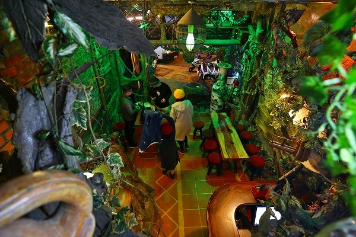
散々迷って、やっと入口のカウンターに辿り着いた。
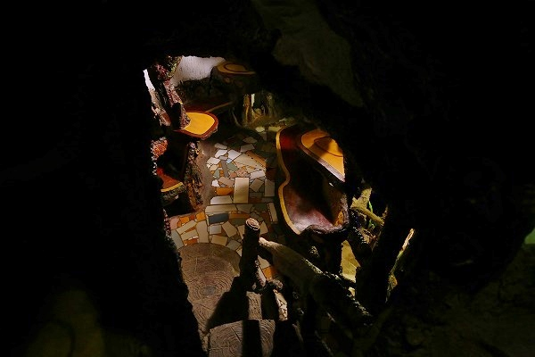
さて、再び迷宮探索の旅へ。
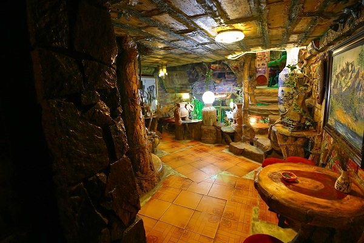
さっき通らなかった別のルートを目指す。
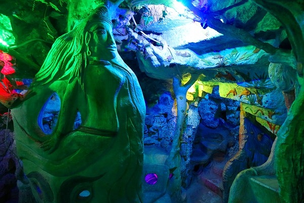
壁面には様々なレリーフが施されていてより一層妖しさを引き立てている。
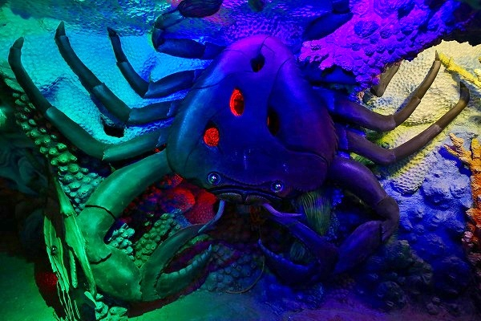
何故か海の生き物が。
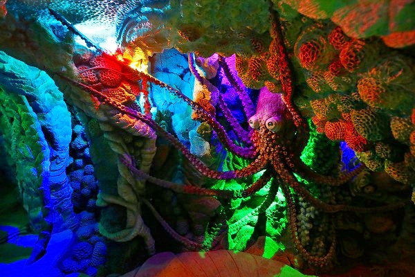
竜宮城を彷彿とさせる。
これらの造形物は全てコンクリート製だ（一部ポリもあり）。
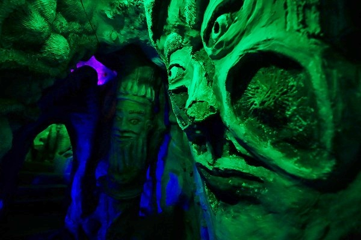
独特すぎる造形が延々と続く。
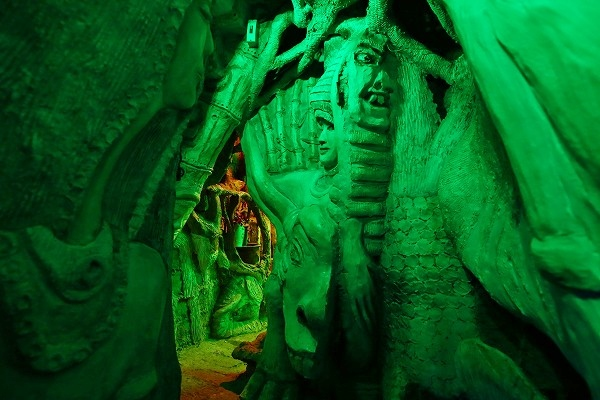
このバーで酔っぱらったら
生きて出られなくなりそう。
平衡感覚が正常なうちに退散いたしましょう。
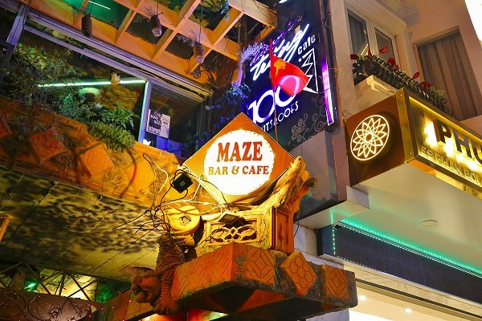
見上げると
MAZE BAR&CAFE そして
100 roofs bar とある。
成程、100の屋根とは言い得て妙なり。
地上3階地下1階+屋上をフルに使いまくった素晴らしい立体迷宮。
ダラットへお越しの際は是非迷ってみてくだされ。
ただしドリンクこぼさぬよう&飲みすぎには重々ご注意召されよ。
それにしても
ホテルといい、バーといい、どうなってるんだ。ダラットよ。
まあ、楽しいからいいんだけど。
さっきからお寺が出てこねーぞー、の声が聞こえてきそうなのでそろそろお寺にいきます…
次へGO！